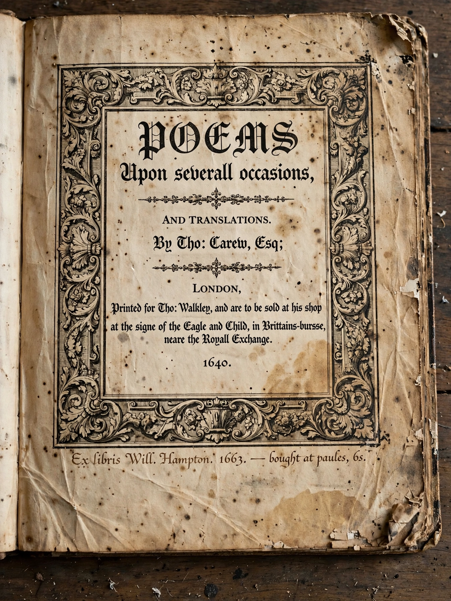

Lycidas
From Wikipedia, the free encyclopedia

"Lycidas" is a poem by John Milton, written in 1637 as a pastoral elegy for the memorial volume honouring his Cambridge acquaintance Edward King, who drowned in a shipwreck off the Welsh coast in August 1637. The poem, 193 lines long, is considered among Milton's finest works and one of the greatest short poems in English.
Summary
Framed within the conventions of the pastoral elegy — the mourning shepherd-poet, the procession of mourners, the consolation — Milton uses the occasion to meditate on premature death, poetic fame, and the corruption of the clergy (in the famous digression delivered by "the Pilot of the Gallilean lake", St. Peter, who denounces the "blind mouths" of unworthy pastors). The poem closes with the promise of King's resurrection: "Weep no more, woeful shepherds, weep no more, / For Lycidas your sorrow is not dead".
Critical reception
Samuel Johnson famously attacked the poem's pastoral artifice ("passion runs not after remote allusions"), but modern criticism has generally held it in the highest regard, and its closing lines — "Tomorrow to fresh woods, and pastures new" — have become a byword for turning to new endeavours.